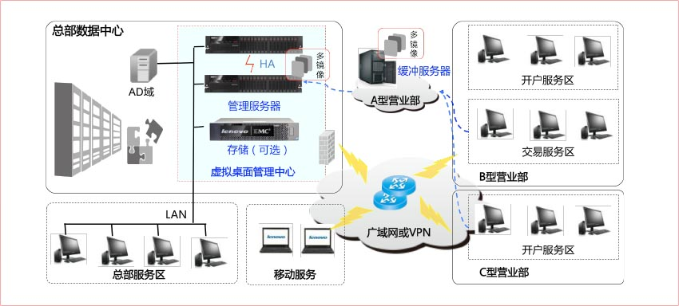
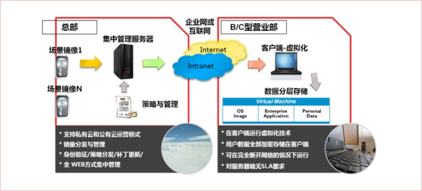
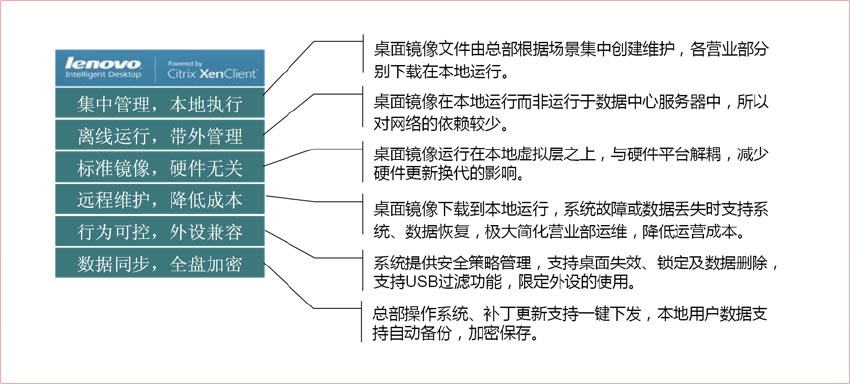
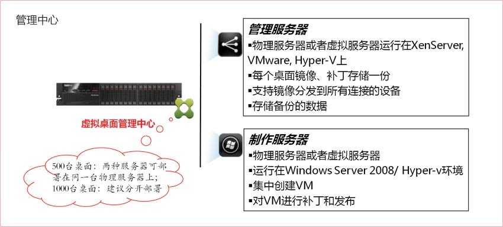
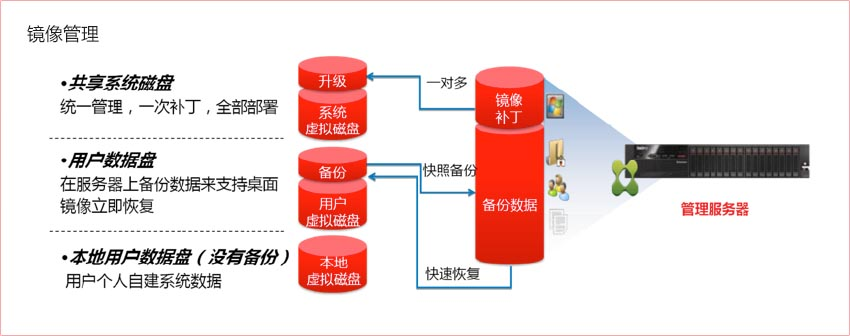
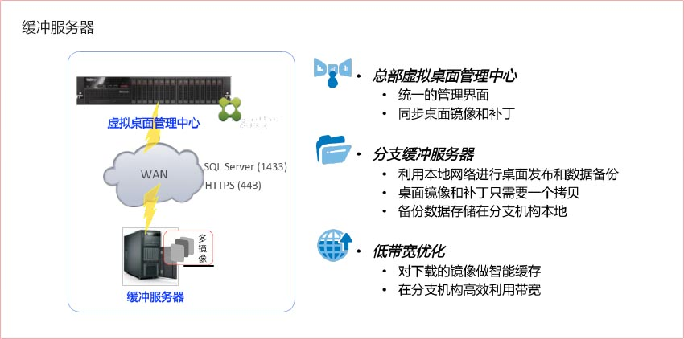
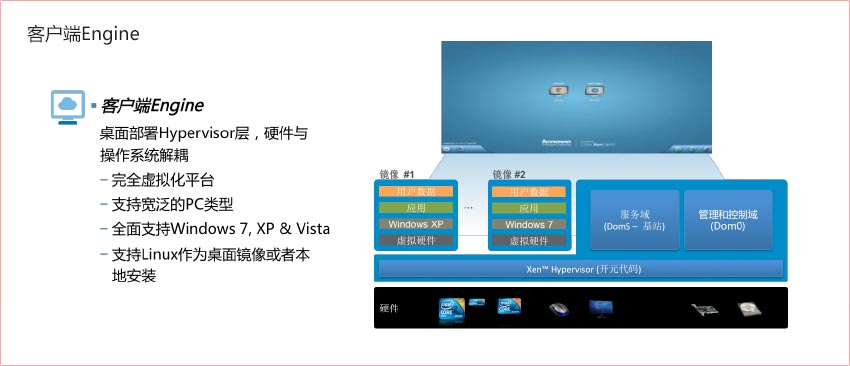
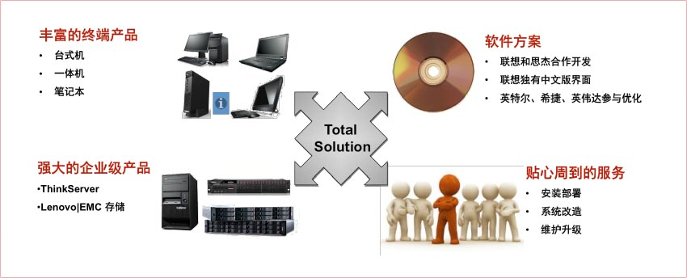
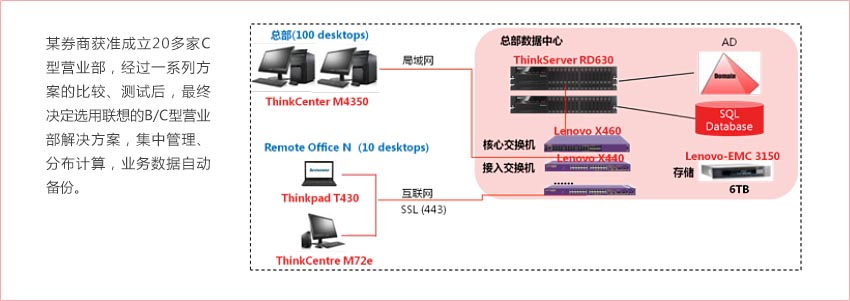

解决方案架构图
解决方案工作原理
解决方案独特价值
各核心部件功能概述
   
端到端的完整解决方案
成功案例
客户获益
- 增强桌面管理，降低运营成本
总部基于典型场景创建N个桌面镜像，如开户、理财、交易等服务桌面，各营业部终端根据需要下载安装即可，无需逐台安装操作系统、应用软件，将运维人员的精力从基础维护中解放出来提高运维效率。 - 弹性部署业务，硬件平台无关
传桌面镜像基于虚拟化技术实现，新的桌面场景随需创建，创新业务可迅速部署到全部或部分营业部，提高业务发布进度。
金融系统以稳定为主，当硬件平台更新换代时，往往涉及新硬件驱动的适配，通过虚拟化技术模拟即可使整个系统从硬件中解放出来。 - 强化数据安全，备份安全保障
各营业部桌面运行数据本地加密保存，防止数据泄密；系统运行不依赖于网络，当网络连通时可上传数据至总部系统，并可将数据备份 到总部系统。 - 加速网络服务，支持分级部署
针对网络不稳定区域，可选择部署分级缓冲服务器，一方面与总部管理服务器保持同步，另一方面可实现对本地桌面的集中管理和数据 备份。